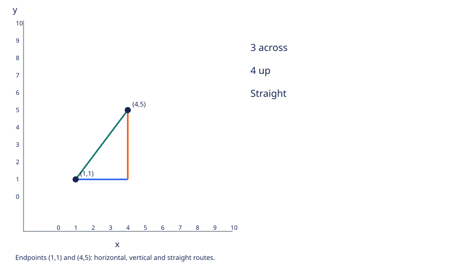
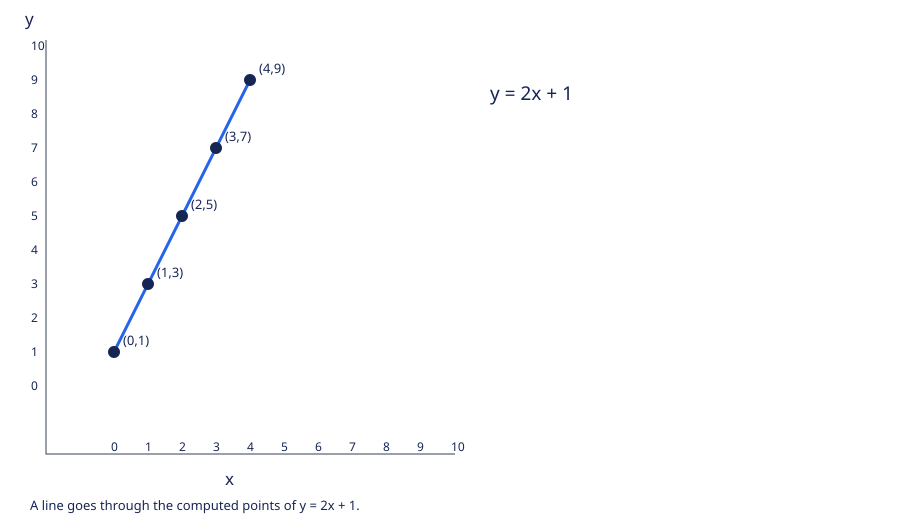
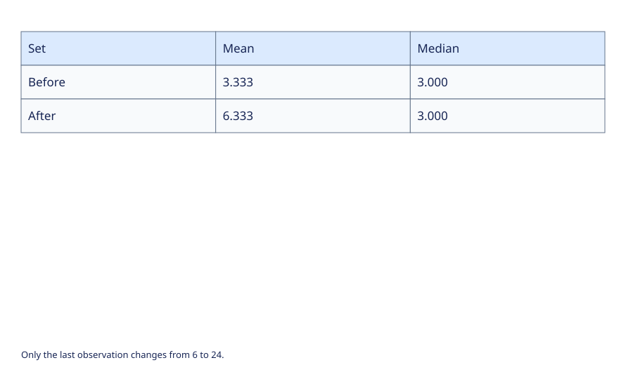
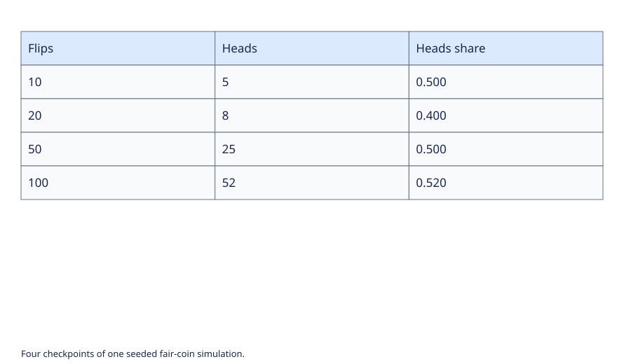
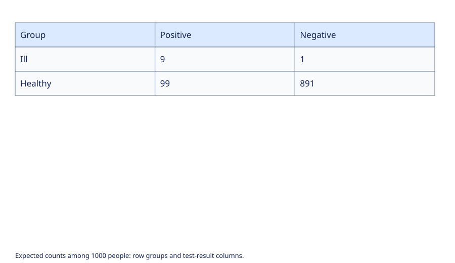
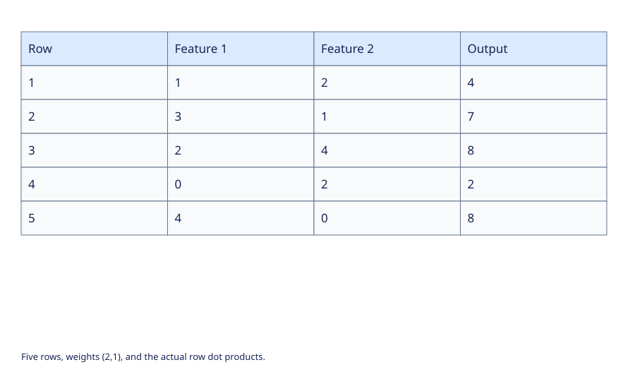

Mina has a market map, a stack of score cards and a mystery test table. She gives Tuktuk one pencil and asks it to explain every choice before calculating. Rafi keeps the answer cards face down. The challenge is to choose the right group, direction or shape, rather than start multiplying whatever numbers happen to be visible.
Allow sixty minutes. Bring squared paper and a pencil; use a calculator for square roots and exponentials after setting up the arithmetic. Work through the six pictures, then the paper problems, then the short programs. Explain units, feature order and denominators aloud.
The interactive quiz repeats the same six picture questions. Printed pictures include their numeric information, so you can use this sheet away from a computer. Keep full precision during a calculation and round reported decimals at the end.






For each picture, point to the values you used. A distance answer should name a route. A slope answer should compare two inputs. A conditional probability answer should say which column supplies the denominator.
The first nine exam questions provide the corresponding worked solutions. Award credit for a correct setup even if a final decimal is slightly inaccurate. A wrong denominator or mismatched weight order needs a conceptual repair.
Read these complete programs without running them first. For the first, mark which dimension counts features after transpose. For the second, calculate the slope from the old x before writing the new one.
import numpy as np
X = np.array([[1, 2], [3, 1], [2, 4]])
print(X.T.shape)x = 4
x -= 0.25 * 2 * (x - 1)
print(f"{x:.2f}")The quiz includes these two programs with answer choices. After your prediction, run the code and explain any disagreement using the shape rule or update formula. Guessing from the number of visible entries can confuse a table with a vector.
The first coding task reads two endpoints and reports both route lengths. Test coincident points and a reversed route as well as a diagonal. Preserve full internal values before formatting three decimals.
The second task reads two weights and three feature rows. Compute a row dot product for every example. A zero weight should ignore one feature contribution; a negative weight should reverse that contribution's sign.
The remaining practice tasks ask for outlier arithmetic, a die event, a changed Bayes base rate and a gradient stability argument. Solve the written questions with a diagram where it clarifies the setup.
For picture answers, compare your work with the quiz explanations. For numericals, use the worked exam answers. Revisit distance for unit and route mistakes, spread for centre and denominator conventions, and Bayes for reversed conditions.
Revisit slopes and minimums if you moved uphill or rounded too soon. Use matrices when output count, transpose or feature alignment is unclear. Explain the corrected rule in a fresh example before marking the idea as understood.
Keep one point for a correct drawing or selected group, one for a clear formula and one for the final value with units where applicable. Ask a classmate to challenge the interpretation, especially when a small error average is used to support a strong real-world claim.